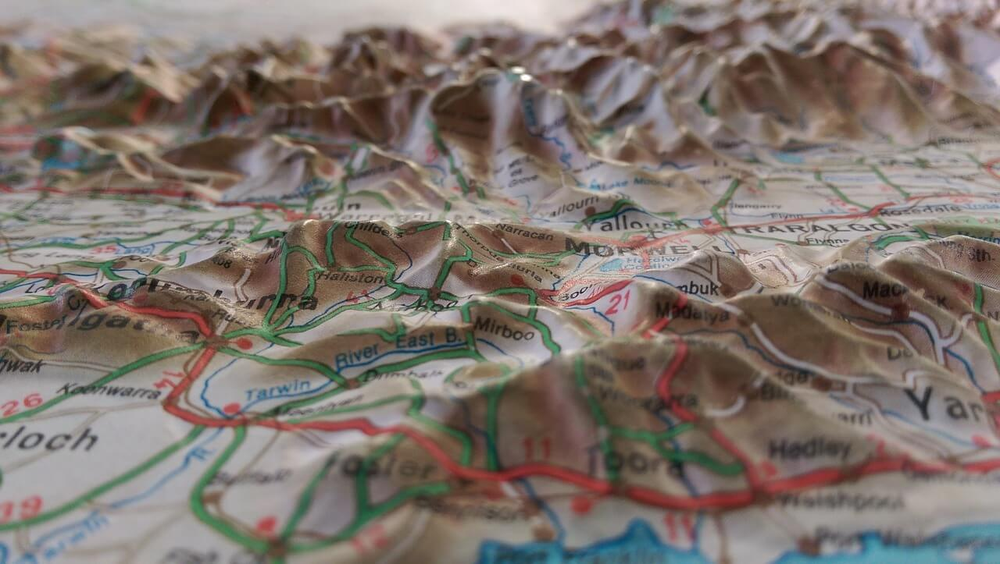

GEOLOGIA
EQUIPO7
5.9 Métodos Geofísicos.
Es la aplicación de los principios y prácticas de la Física para la resolución de los problemas relacionados con la tierra midiendo de modo indirecto las variaciones de las magnitudes físicas en el espacio y el tiempo.
Como ocurre en otras ciencias, la Geofísica se divide en dos partes Geofísica Pura y Geofísica Aplicada. Se denomina Geofísica Pura a la investigación del planeta en que habitamos con fines de conocimiento científico.
Como ocurre en otras ciencias, la Geofísica se divide en dos partes Geofísica Pura y Geofísica Aplicada. Se denomina Geofísica Pura a la investigación del planeta en que habitamos con fines de conocimiento científico.
En la geofísica se distinguen dos grandes ramas:
La Geofísica interna que analiza el interior de la Tierra como son: Sismología.- Que estudia los terremotos y la propagación de las ondas elásticas (sísmicas) que se generan en el interior de la Tierra. La interpretación de los sismogramas que se registran al paso de las ondas sísmicas permite estudiar el interior de la tierra.
Geotermometría, estudia los procesos relacionados con la propagación de calor en el interior de la tierra, particularmente los relacionados con desintegraciones radioactivas y vulcanismo.
Geodinámica, estudia la interacción de esfuerzos y deformaciones en la tierra que causan movimientos del manto y de la litosfera.
Prospección geofísica, usa métodos cuantitativos para la localización de recursos naturales como petróleo, agua, yacimientos de minerales, cuevas, etc. o artificiales como yacimientos arqueológicos.
Ingeniería geofísica o geotecnia, usa métodos cuantitativos de prospección para la ubicación de yacimientos de minerales e hidrocarburos, así como para obras públicas y construcción en general.
Vulcanología, es el estudio de los volcanes, la lava, el magma y otros fenómenos geológicos relacionados.
La Geofísica externa estudia las propiedades físicas del entorno terrestre. Geomagnetismo, estudia el campo magnético terrestre, tanto el interno generado por la propia tierra como el externo, inducido por la tierra y por el viento solar en la ionosfera. Paleomagnetismo, se ocupa del estudio del campo magnético terrestre en épocas anteriores del planeta. Gravimetría, estudia el campo gravitatorio terrestre. Oceanografía u Oceanología, estudia el océano. Meteorología, estudia la atmósfera y el tiempo atmosférico, circunscribiéndose a la Tropósfera.
Aeronomía, es la ciencia que estudia las capas superiores de la atmósfera. Climatología, estudio del clima terrestre actual y en el pasado geológico. estudio de la ionosfera y magnetosfera.
Métodos geofísicos
Un método geofísico estudia la repartición en profundidad de alguna determinada propiedad físico-química de las capas del subsuelo, o de alguna característica relacionada con dichas propiedades. Y se usa junto prospecciones directas como sondeos y datos obtenidos mediante sistemas refrendados. Dichos métodos tienen una clasificación de acuerdo a la forma en la que realizan sus estudios, pudiendo ser eléctricos, sísmicos, gravimétricos y magnéticos, entre otros.
Los métodos eléctricos son un tipo de método geofísico, y constituyen pruebas realizadas para la determinación de las características geotécnicas de un terreno, como parte de las técnicas de reconocimiento de un reconocimiento geotécnico. Permiten evaluar la resistividad media del subsuelo mediante la medición de una diferencia de potencial entre dos electrodos situados en la superficie. El flujo de corriente a través del terreno discurre gracias a fenómenos electrolíticos, por lo que la resistividad depende básicamente de la humedad del terreno y de la concentración de sales en el agua intersticial. Por ello existe una gran variabilidad de valores de la resistividad para cada tipo de terreno, con rangos muy amplios. El método consiste en colocar cuatro electrodos alineados a igual distancia entre sí (d). Se conecta una batería a los electrodos exteriores midiendo la intensidad que circula entre ellos, así como el voltaje entre los electrodos intermedios. La resistividad viene definida por el cociente entre el voltaje y la intensidad de la corriente medidos, multiplicado por 2 Π d. El valor obtenido representa la resistividad media de un gran volumen de suelo, ya que la red de corriente se extiende en profundidad, aunque tienen mayor peso las características eléctricas de los terrenos más superficiales. En cualquier caso, la presencia de un estrato de alta resistividad cercano a la superficie bajo otro de gran resistividad, eleva el valor resultante del ensayo, al contrario de lo que sucede si existe un material de baja resistividad bajo un estrato de alta. El ensayo puede realizarse en forma de sondeo eléctrico, buscando la variación de la resistividad con la profundidad. Para ello se hacen diferentes medidas variando la distancia "d" entre los electrodos y manteniendo el centro de la alineación de los cuatro electrodos en un punto fijo. Al incrementar la distancia aumenta la profundidad alcanzada por las líneas de corriente, englobando, por tanto, una mayor profundidad de suelo. Si la resistividad crece, puede concluirse que hay un estrato profundo de mayor resistividad, sucediendo lo contrario si la resistividad decrece al aumentar la separación. La profundidad hasta la que puede aplicarse es de unos 20 metros.
Importancia en ingeniería civil
La amplitud de los rangos de la resistividad aparente para un determinado terreno, da lugar a que exista solape entre los rangos de diferentes tipos de terreno. Esto hace muy difícil la identificación de un determinado suelo o roca, y la profundidad de su localización. Además, hay una pobre correlación entre la resistividad y las condiciones mecánicas de un terreno. Por lo tanto, tienen una menor aplicación en la ingeniería civil que los métodos sísmicos de refracción, aunque pueden servir para detectar la profundidad del nivel freático, apoyándose siempre en los resultados de prospecciones como sondeos o calicatas. Donde sí tienen una utilización interesante es en la determinación de cavernas en zonas cársticas, dada la clara diferencia de resistividad existente entre un terreno y el aire, siendo esta última prácticamente infinita. En cualquier caso, la interpretación de los resultados no es fácil, puesto que el resultado proporciona el valor medio de la resistividad a través de una determinada trayectoria, que engloba al terreno sano y al vacío en las cuevas cársticas. Pero, por otra parte, las cuevas o galerías existentes pueden estar parcial o totalmente rellenas de agua, y como el agua, al contrario que el aire, es un gran conductor eléctrico, el resultado obtenido al atravesar una caverna puede no ser un aumento drástico de la resistividad, sino su reducción.
Otra aplicación de este método consiste en definir si un suelo es adecuado para albergar tuberías de fundición como las realizadas en abastecimientos de agua. Si su resistividad es baja, posibilita que las corrientes parásitas existentes en el terreno (zonas cercanas a vías de ferrocarril, transformadores, subestaciones eléctricas) puedan afectar a estas tuberías provocando y acelerando su corrosión. Por tanto, en el informe geotécnico de proyecto deberá contemplarse esta posibilidad, obteniendo la resistividad de los terrenos atravesados por la traza de la conducción, para en su caso, plantear un sistema de protección.
Métodos gravimétricos
Los métodos gravimétricos son un tipo de método geofísico, y constituyen pruebas realizadas para la determinación de las características geotécnicas de un terreno, como parte de las técnicas de un reconocimiento geotécnico. Además, pueden obtenerse en una muestra de agua antigua y por lo tanto consiste en la medición muy precisa de la aceleración de la gravedad en distintos puntos, registrando variaciones anómalas de dicha aceleración, que pueden suponer cambios bruscos en la densidad de un terreno. De esta forma, se pueden detectar huecos o cavernas, como las existentes en los terrenos cársticos, o en zonas de explotación minera actual o histórica, fallas, domos salinos, profundidad de capas competentes compactas, etc.
Los resultados obtenidos son, en general, poco concluyentes para que su empleo esté generalizado en la ingeniería civil, a pesar de lo cual, no dejan de constituir un método particular de los métodos geofísicos, como alternativa en el reconocimiento geotécnico de un terreno.
Metodos magnéticos
La tierra es un imán natural y da lugar al campo magnético terrestre. Las pequeñas variaciones de este campo, pueden indicar la presencia en profundidad de sustancias magnéticas, que en algunos casos pueden ser minerales de interés comercial como la magnetita, la pirrotina, la ilmenita, la jacobsita, etc. También, existen minerales de interés asociados a sustancias magnéticas, como por ejemplo los sulfuros de Cu, Pb y Zn que frecuentemente se presentan con pirrotina u otros minerales magnéticos, Los métodos magnéticos se utilizan como métodos de reconocimiento general en prospección petrolífera y de reconocimiento y detalle en prospección minera.
Metodos sísmicos
Los métodos sísmicos son un tipo de método geofísico, y constituyen pruebas realizadas para la determinación de las características geotécnicas de un terreno, como parte de las técnicas de reconocimiento de un reconocimiento geotécnico .
Las ondas sísmicas que atraviesan un terreno pueden ser:
• Longitudinales o de compresión.
• Transversales o de cizallamiento.
• Superficiales.
La velocidad de propagación de las ondas sísmicas en el terreno depende de sus características de deformabilidad. En la hipótesis de suponer un comportamiento elástico para el terreno, la velocidad de las ondas longitudinales y transversales es función del módulo elástico y del coeficiente de Poisson (ambos dinámicos), por lo que con ambas expresiones pueden obtenerse dichos parámetros.
Las ondas longitudinales (Ondas P) son más rápidas que las transversales (Ondas S), lo que dificulta la detección de estas últimas en campo. Por ello, en general se obtiene el módulo elástico a partir de la velocidad longitudinal, estableciendo hipótesis respecto al valor del coeficiente de Poisson. El módulo dinámico tiene un valor mayor que el estático, ya que se obtiene para incrementos tensionales pequeños como son los producidos por ondas sísmicas. La relación entre el módulo dinámico y el estático se considera normalmente de 4, pero el rango puede estar entre 1 y 20.
El método sísmico de refracción se basa, tanto en el hecho de la diferencia de velocidad de la onda sísmica en los distintos terrenos, como en que las ondas al cruzar la frontera entre dos tipos de terreno distinto sufren refracción, (al igual que sucede con las ondas de luz), cambiando su dirección en un ángulo cuyo valor depende de la relación entre las velocidades de onda de cada terreno.
5.10 Cartografía
La cartografía es un campo complejo, que cambia constantemente. Visto en el sentido más amplio, este proceso incluye desde la recopilación, evaluación y procesamiento de datos de origen, a través del diseño intelectual y gráfico del mapa, hasta el dibujo y la reproducción del documento final. Si quieres saber qué es la cartografía y cómo ha evolucionado, hoy te hablamos en detalle de sus características.
La cartografía es una mezcla única de ciencia, arte y tecnología y requiere una variedad de conocimientos y habilidades profundas por parte del cartógrafo. En pocas ocasiones solo una persona se encarga de todo el desarrollo o el estudio de un mapa. Es mucho más común que sean varias personas, formando un equipo quienes se encarguen de las diferentes tareas. A grandes rasgos, la cartografía basa sus labores de representación en una serie de elementos y conceptos que le permiten organizar con exactitud los distintos contenidos de un mapa conforme a un punto de vista y una escala específicos. Tales elementos cartográficos son:
• La escala. Dado que el mundo es inmensamente grande, para representarlo visualmente necesitamos reducir el tamaño de las cosas de manera convencional, para así mantener las proporciones de las cosas. Dependiendo de la escala empleada, las distancias que normalmente se miden en kilómetros pasarán a medirse en centímetros o milímetros, construyendo así un criterio de equivalencia.
• Los paralelos. El globo terráqueo se divide cartográficamente en dos conjuntos de líneas, el primero de los cuales son los paralelos. Si el planeta se divide en dos hemisferios a partir del ecuador, entonces los paralelos son líneas paralelas a ese eje horizontal imaginario, que seccionan el globo en franjas climáticas, a partir de otras dos líneas conocidas como trópicos (de cáncer y de capricornio).
• Los meridianos. El segundo conjunto de líneas que dividen por convención al globo terrestre, los meridianos cruzan los paralelos de manera perpendicular, siendo el meridiano “eje” o central (llamado “meridiano cero” o “meridiano de Greenwich”) el que pasa por el observatorio real de Inglaterra en Greenwich, Londres, y que coincide en teoría con el eje de rotación de la Tierra. A partir de entonces el mundo se divido en dos mitades, demarcadas por un meridiano cada 30°, cortando la esfera terrestre en una serie de gajos.
• Las coordenadas. Cruzando paralelos y meridianos se logra una cuadrícula, y con ella un sistema de coordenadas que permite asignar a cualquier punto terrestre una latitud (determinada por los paralelos) y una longitud (determinada por los meridianos). Aplicando esta teoría es cómo funcionan los sistemas globales de posicionamiento.
• Los símbolos cartográficos. Los mapas poseen su propio lenguaje, que permite identificar los elementos de interés, en base a una convención específica. Así, por ejemplo, se asignan ciertos símbolos a las ciudades, otros a las capitales, otros a los puertos y aeropuertos, etc.
////////5.10.1 Cartografia general//////////////////
La cartografía general tiene que ver con todos esos mapas que se elaboran para una audiencia general y con diversas referencias. El mapa de un país o un mapamundi, son ejemplos de cartografía general.
//////////////5.10.2 Cartografia temática////////////////////// La Cartografía temática implica los mapas de temas geográficos específicos, orientados hacia las audiencias específicas. Un par de ejemplos puede ser el mapa del punto demostrar la producción del maíz en Indiana o un mapa sombreado del área de los condados de Ohio, dividido en clases numéricas.
Mientras que el volumen de datos geográficos han evolucionado enormemente durante el siglo pasado, la cartografía temática ha llegado a ser cada vez más útil y necesaria para interpretar datos espaciales, culturales y sociales. Por ejemplo las redes sociales se mapean georeferencialmente, también se hacen mapas que muestren distancia entre personas (en número de vínculos o pasos que los separan). La línea del tiempo también puede considerarse un mapa o carta. A partir de su uso en la navegación se han perfeccionado técnicas que son recuperadas para guiar la navegación web. En sociología y comunicación, el oficio del cartógrafo también es citado como estrategia para sostener el rumbo en un mundo fluido.
El mapa del deporte de orientación combina la cartografía general y temática, diseñada para una comunidad de usuario muy específica. El elemento temático más prominente está sombreado, eso indica grados de dificultad del recorrido debido a la vegetación. La vegetación en sí mismo no es identificada, clasificándose simplemente por la dificultad (“lucha”) que él presenta.